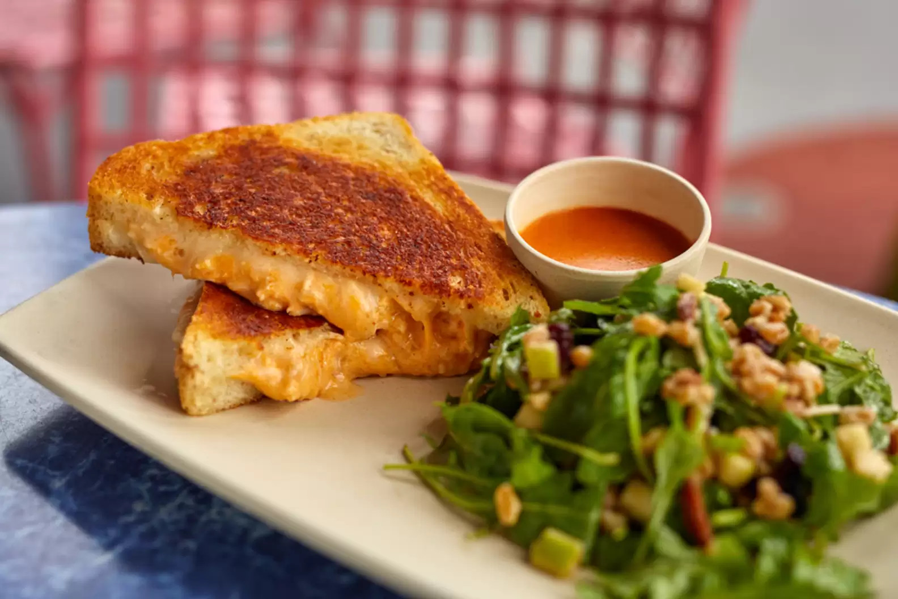

Ingredients
-
Buffalo Chicken Filling
- 1 cup whipped cream cheese
- 1 cup shredded Monterey Jack cheese
- 2/3 cup shredded cheddar cheese
- 1/2 cup buffalo hot sauce, plus more, to taste
- 2 cups shredded chicken
- 8 large slices sourdough bread
- 8 slices non-smoked provolone cheese
- 8 tablespoons mayonnaise
Directions
For Buffalo Chicken Filling:
- Combine cream cheese, Monterey jack cheese, and cheddar cheese in a large bowl. Beat with a hand mixer on medium speed until combined. Add hot sauce and beat until incorporated.
- Add chicken and beat for 30 seconds. Add additional buffalo hot sauce, if desired.
- Refrigerate until ready to use.
For Buffalo Chicken Grilled Cheese Sandwich
- Heat a large skillet over medium-low heat for 5 minutes.
- Place 4 slices of sourdough bread on a large cutting board and top each with one slices of provolone cheese. Evenly divide buffalo chicken filling among the 4 sandwiches. Top with remaining slices of provolone and bread.
- Spread 1 tablespoon of mayonnaise on both sides of each sandwich.
- Cook on preheated skillet for 1-2 minutes per side, until desired doneness.
Back